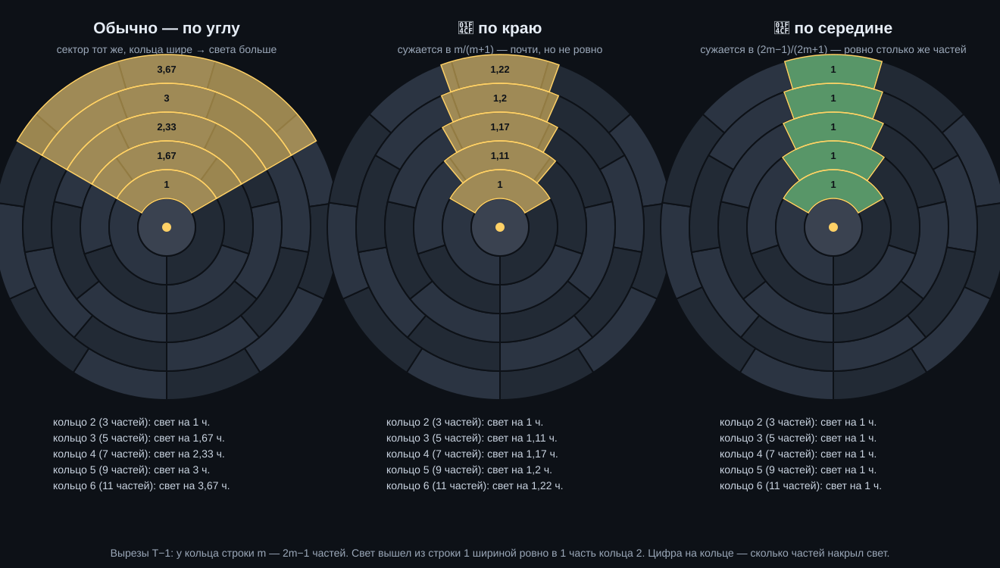

Крест из двух зеркал. Вертикальная черта — разворот ⇄: справа та же строка, прочитанная с другого конца. Горизонтальная — инверсия 🔁: внизу 0 и 1 меняются местами. В правом нижнем углу — и то и другое (⇄🔁). Вместе с «ничего не делать» их четыре, и складываются они как повороты квадрата: любое дважды — возвращает. Это группа V₄.
Неподвижные биты (⇄🔎) — те, что равны своему зеркальному: бит №k и бит №«длина−1−k». Разворот их не трогает. Остальные — меняющиеся, и если инвертировать ровно их (🔁 Инв меняющихся), получится развёрнутая строка — это и есть определение меняющихся.
Орбита — сколько разных строк среди четырёх. У инверсии неподвижных строк нет (бит не равен сам себе инвертированному), поэтому орбита — 2 или 4: 2, когда строку держит разворот (палиндром) или инв-разворот (антипалиндром).
Под строкой — треугольник: под каждой парой соседей их XOR, n бит → n−1 → … → 1. Каждый этаж теряет бит (0110 и 1001 дают под собой одно и то же), поэтому по низу строку не восстановить.
Но левый край (первый бит каждого этажа) — та же строка, переложенная без потерь: n бит ↔ n бит. Это биномиальное преобразование над GF(2), и оно само себе обратное: спуск от края даёт исходную строку. Не сжатие, а зеркало.
Разреженный или повторяющийся край — в строке есть порядок; край-мусор той же длины — порядка этим спуском не видно. У Серпинского край — одна единица.
Не путать с 🔺+1: там строку обкладывают нулями по краям, и она растёт (1111 → 10001), а здесь краёв нет, и она сжимается (1111 → 000).
Шаг применяется к строке снова и снова, пока она не повторится. μ — сколько шагов до входа в петлю, λ — длина петли. λ = 1 — неподвижная точка: шаг больше ничего не меняет. У «Круга» на n битах λ делит n, у «Круга Инв» — делит 2n: за n шагов строка становится своей инверсией, ещё за n возвращается.
🔥 Память: бит разгорается, пока держит своё значение, — фиолетовый, розовый, оранжевый, золото (8 шагов и дольше). Петля подсвечена зеленоватым фоном.
GF(2) — арифметика, где есть только 0 и 1 и где 1 + 1 = 0. Сложение — это XOR, умножение — AND.
Почти все шаги над строкой — аффинные: каждый новый бит есть XOR каких-то старых плюс, может быть, константа. Значит шаг — это F(x) = A·x ⊕ b, где A — таблица n×n из нулей и единиц, и t шагов подряд — тоже такое же отображение. Вопрос «какие строки вернутся к себе ровно через t шагов» — уравнение (Aᵗ ⊕ E)·x = bₜ, и решается оно методом Гаусса, без перебора 2ⁿ строк. Ранг r говорит всё сразу: решений либо нет, либо ровно 2^(n−r).
AND так не сводится — он нелинеен, и там остаётся только перебор; ровно там живёт непредсказуемость. Поэтому AND в списке нет.
Самое короткое правило вида «следующий бит = XOR нескольких предыдущих», которое выдаёт ленту целиком (алгоритм Берлекэмпа — Мэсси: за n² шагов и с гарантией, что короче нет). Длина правила L — линейная сложность.
L много меньше длины — лента порождена простым правилом и хранится как 2·L бит (зерно + отводы) вместо N. L около половины длины — так ведёт себя случайная лента: линейного правила в ней нет, и это честный ответ, а не промах поиска.
Кратчайшее правило среди ВСЕХ возможных (колмогоровская сложность) найти нельзя в принципе, а у большинства строк его и нет: правил короче n бит меньше, чем строк длины n. Точный поиск возможен только внутри одного семейства — здесь линейного.
🪞 Оси ленты. Все строки склеиваются в одну ленту выбранным обходом, и в ней ищутся оси, которые идут через стык строк — их не видно ни в одной строке по отдельности. Порог длины — max(6, ⌈2·log₂N⌉): в случайной ленте из N бит самый длинный палиндром растёт как 2·log₂N, и короче порога ось неотличима от случайности. Инв-обходы не нужны: инверсия и разворот всей ленты осей не меняют.
🧬 Ядро децимации. Лента прореживается с шагом k = 2…8: каждый k-й бит с каждого сдвига, потом каждый k²-й… Все прореженные куски сводятся к представителю своей четвёрки V₄ и считаются. Перестал расти счёт — ядро замкнулось: лента устроена как k-автоматная (Туэ–Морс, бумажное складывание). Серпинский, склеенный из строк, НЕ замыкается и не должен: длины строк растут. На конечной ленте это повод присмотреться, а не теорема.
Ищет в столбике текущую строку вместе с её отражениями: развёрнутую ⇄, инвертированную 🔁 и инв-развёрнутую ⇄🔁. Для зеркал это одна и та же строка, увиденная с разных сторон, — одна орбита.
Целиком — строки, которые с текущей из одной орбиты (сравниваются по канонике: наименьшей из четырёх). Кусками — где текущая строка или её отражение стоит внутри других строк. Клик по находке — перейти к строке.
Строка делится пополам: левая половина L, правая R (при нечётной длине средний бит отдельно). Правую можно попробовать достроить из левой четырьмя способами: зеркало ⇄, зеркало с инверсией ⇄🔁, повтор ⧉, повтор с инверсией ⧉🔁. Поправка D — по биту на каждый бит L: 1 там, где пара не сошлась. На самой L такие несимметричные биты подсвечены золотом.
L + D — снова n бит: зеркало не сжимает, а раскладывает строку на «что похоже на отражение» и «где отличается». Зеркальных строк длины n всего 2^(n/2). Выигрыш — только когда D пустая или редкая: тогда хранятся половина и номера несимметричных бит. Если симметрична и сама половина, строка складывается раз за разом (Туэ–Морс — ⧉🔁 до самого низа).
△ От центра. Тот же разбор, построенный треугольником из середины строки: вершина — средний бит (при чётной длине — средняя пара), каждый этаж добавляет по биту слева и справа. Пара либо симметрична, либо нет — это та же поправка D, прочитанная от центра наружу. Сколько этажей подряд без золота — такой длины палиндром стоит в центре.
Цена — грубая мерка: на этаже 1 бит «сложено ли», 2 бита «каким зеркалом», средний бит, поправка (сырьём или номерами единиц). Случайная строка выходит в n+1 — честное «короче нет».
⇋ Поправки → столбик — поправки всех строк одним столбиком вместо строк (↩ вернёт). Поодиночке поправка не сжимает, но у разных строк поправки бывают одинаковыми: одна D на всю пачку. Вид зеркала «общий» стоит 2 бита на всю пачку; «у каждой свой» — 2 бита в начале каждой строки (00 ⇄, 01 ⇄🔁, 10 ⧉, 11 ⧉🔁), вид тоже становится битами. Столбик потом можно разбирать всеми окнами — поправки поправок.
Лента (текущая строка или все строки подряд) режется на куски длиной «первая», первая+шаг, первая+2·шаг…: при 1 и 1 — треугольник 1, 2, 3, 4… бита, при шаге 0 — прямоугольник ширины «первая». Куски встают столбиком вместо строк (↩ вернёт).
Живой показ. Треугольник из текущей строки (или из всех подряд) перестраивается сам, стоит строке измениться любым инструментом — кодом ⇉, 🔺+1, поправкой, вводом. Строка, которая выводится из предыдущей (🔺+1 от неё или повтор), — тусклая: в ней нового нет. У строки «предыдущая + бит» тусклое начало, новые биты — золотом. Яркие строки целиком — это и есть новые сведения. «⊿ Сложить» кладёт то же самое в столбик.
Форма бесплатна — её знают обе стороны, хранить надо только длину. Но порядка она не добавляет: это линза, в ней порядок либо виден, либо нет. Строк, где каждая строка треугольника — предыдущая плюс 1 бит, из 10 бит всего 16 из 1024. Зато правильная форма вскрывает спрятанный порядок: Серпинский, выписанный подряд, в строке — мусор, а в треугольнике каждая строка — 🔺+1 от предыдущей, нового ноль бит. Картинка, вытянутая в строку, оживает в прямоугольнике своей ширины. Формы можно перебирать — выбор формы стоит всего нескольких бит.
Под строкой пишутся все её циклические сдвиги — квадратная таблица. Таблица сортируется, и хранится только последний столбец и номер строки, где встал оригинал. Это преобразование Барроуза — Уилера, на нём построен архиватор bzip2.
Порядок сортировки бесплатен — отсортировать может любой, — и он кодирует порядок в строке: по последнему столбцу и номеру строка восстанавливается целиком. Отсортируй последний столбец — получишь первый; пары «последний → первый» — соседние биты исходной строки, и по ним таблица собирается обратно.
Счёт честный: n бит столбца + номер (log₂n бит) — чуть больше исходного. Выигрыш в другом: сортировка сводит похожие биты вместе, в длинные серии, а серии записываются короче. Почти периодическая 011011011011010011 — 12 серий, после сортировки 111111001111100000 — 4. У случайной строки серии остаются короткими, выигрыша нет.
Каждый бит сообщения — одна строка. 0 — строка базы (маска, повторённая на длину строки: 10 → 1, 10, 101, 1010…), 1 — отступ от базы: её инверсия или сплошные единицы (как в вопросе: 11, 111…). Строки идут треугольником (строка j на бит длиннее предыдущей) или все одной длины.
Это расширение спектра — так передают GPS и сотовая связь CDMA: один бит растягивается на k «чипов». Сведений в строке 1 бит, остальное — запас прочности. Читается строка по тому, к чему она ближе — к базе или к отступу (расстояние Хэмминга: сколько бит не совпало). Между базой и отступом d несовпадающих бит, и строка переживает до ⌊(d−1)/2⌋ испорченных.
У инверсии d — вся длина строки, у «сплошных единиц» при базе 10 — только нули базы, примерно половина: запас вдвое меньше. Поэтому настоящие системы шлют ± — базу и её инверсию. Попробуй шум 20–30 % и сравни.
«📡 В столбик» кладёт строки сигнала под текущей и выделяет их; «📡 Прочитать» читает выделенные строки (ничего не выделено — все) и сверяет с последним отправленным. Строки можно и испортить руками — двойным щелчком.
Треугольник XOR — это код, исправляющий ошибки. Каждая тройка «два бита сверху, один под ними» — проверка: a ⊕ b ⊕ c = 0. Внутренний бит входит в три проверки сразу — снизу в одну и сверху в две, — то есть принадлежит нескольким линиям треугольника. Испорченный бит ломает ровно свои проверки, и общий у сломанных — только он: место находится, бит переворачивается обратно. Так устроены и сетки с чётностями по строкам и столбцам (RAID, QR-код).
Треугольник берётся из выделенных строк (ничего не выделено — все) и узнаётся по длинам: строки короче на бит — ▽ спуск, длиннее на бит — 🔺 Паскаль (у него за краями нули, и у крайних бит проверка из двух). Чем больше у бита сломанных проверок, тем он краснее; найденный — обведён.
Щелчок по биту в окне переворачивает его — так можно испортить треугольник и посмотреть, найдёт ли. «🩹 Исправить» переворачивает бит, у которого сломанных проверок больше, чем целых, и повторяет, пока есть выгода: так работают декодеры LDPC (Галлагер, 1962). Одну ошибку находит всегда, несколько — часто, но не всегда. Окно живое: после правок строк пересчитывается само. ↩ возвращает.
Попробуй: «△ Треугольник из строки» → ▽ спуск от строки, выдели его строки по номерам (Shift), «🔍 Проверить» — ноль сломанных; щёлкни бит — найдётся; «🩹 Исправить».
Из отвлечения пользователя: «1 — вид сбоку на линию, 0 — вид на неё сверху: 0 — линия от экрана ко мне, 1 — линия лежит на экране». Каждый бит — отрезок: 1 лежит на экране и идёт вправо, 0 идёт от экрана к тебе. Строка — лесенка из таких отрезков. Взгляд крутится мышью (тащи по картинке) или кнопками.
Спереди единицы — чёрточки, нули — точки: это азбука Морзе. Честная проекция, правда, сливает точки с концами чёрточек, и видна только сплошная черта длиной в число единиц — порядок пропадает. Обойти лесенку кругом — это крест зеркал: спереди — сама строка, слева — 🔁 инверсия (чёрточки — нули), сзади — ⇄ разворот, справа — ⇄🔁 инв-разворот.
Крутится от текущего вида: мышь и стрелки поворачивают вокруг осей экрана — как картинка стоит сейчас, а не вокруг осей мира. Ctrl + перетаскивание — просто передвинуть, без кручения: на схваченной строке — двигается она, на пустом месте — вся картинка. Ось и плоскость (галка): полупрозрачная плоскость строки (у стопки — текущей) и вертикальная ось — видно, как всё повёрнуто.
Кольца-плоскости, как в 3D-программах (галка «оси и плоскости»): вокруг сцены — три полупрозрачных кольца: X, Y, Z, и их оси. Наведи на кольцо — оно подсветится; тяни за кольцо — крутится только вокруг его оси, остальные стоят на месте. Тянешь внутри колец — свободный поворот, как раньше.
Закреплённая ось: потянул за кольцо — его ось закрепляется (кольцо остаётся ярким), и стрелки ▲ ▼ ◀ ▶ / клавиши крутят по 15° только вокруг неё. Снять — свободный поворот мышью внутри колец или Esc. ✥ крест в центре стрелок: нажми и тяни — картинка (или схваченная строка) двигается, как с Ctrl, а крест стоит на месте.
Крутить по отдельности — галка, по умолчанию выключена: тогда щелчок по лесенке только выбирает строку (делает её текущей), а мышь крутит всю стопку. ⟲ сброс строк возвращает все накрученные строки на место (и масштаб).
Схватить одну строку («все вместе», с галкой «крутить по отдельности»): щелчок по её лесенке — строка схвачена (становится текущей и ярче); тянешь её — крутится только она, вокруг своего центра, стопка стоит. Щелчок по пустому месту — отпустить; тогда тянется вся стопка. Стрелки ▲ ▼ ◀ ▶ в правом верхнем углу картинки и стрелки клавиатуры (щёлкни по картинке, чтобы она взяла клавиши) крутят на 15° от текущего вида: в «все вместе» — всю стопку, в «все строки» — карточку текущей строки, иначе — картинку. ⟲ сбрасывает поворот схваченной строки или масштаб. Esc — отпустить.
Масштаб — колесом мыши, к точке под курсором; сдвинуть картинку — Shift + перетаскивание или правой кнопкой; двойной щелчок — масштаб и место как было. На карточках «все строки» колесо увеличивает свою карточку.
Гребёнка (выбор «лесенка / гребёнка»): каждый бит стоит на своём месте в ряд, как буквы, — 1 палочкой вверх, 0 палочкой к тебе. Спереди это штрихкод «| | · |», и порядок виден целиком. Сверху (поворот на 90° вокруг оси ряда) стоячие палочки становятся точками, лежащие встают — это 🔁 инверсия; ещё 90° — палочки вернутся, у палочки нет верха и низа. Сзади — ⇄ разворот. Сбоку, вдоль ряда, все палочки встают одна за другой — остаётся крестик. «Все вместе» для гребёнок — объёмный штрихкод всего столбика.
Все вместе: все строки в одной сцене, лесенки одна под другой — как треугольник в поле строк, — и крутится вся стопка разом, мышью или кнопками. Текущая строка ярче и толще.
Все строки (выбор вверху окна): каждая строка — своя карточка, и каждую можно крутить отдельно, таща по ней мышью. Щелчок по карточке без поворота делает строку текущей. Кнопки видов разворачивают сразу все карточки.
Сверху виден весь путь — полная запись строки: путь по решётке из k шагов вправо и n−k к себе. Таких путей в ту же точку — C(n, k), число из треугольника Паскаля; Серпинский (Паскаль по модулю 2) говорит, чётно ли оно: нечётно ровно тогда, когда k AND (n−k) = 0 (теорема Люка). Наискосок единицы и нули — отрезки разных направлений, и строка снова читается целиком.
Адрес — самая короткая цепочка операций Зазеркалиуса, которая из короткого «зерна» собирает текущую строку: зеркало, антизеркало, инверсия, разворот, повтор, Туэ–Морс, код 1→10 / 0→01, 🔺 Паскаль (k шагов), ▽ спуск (край), круг, и «как есть». Это колмогоровская сложность, но в маленьком мире: здесь её можно искать перебором.
Цена честная, в битах. Номер операции — 4 бита (операций 11). Числа — кодом Элиаса γ (2·⌊log₂ n⌋ + 1 бит), сдвиг круга — ⌈log₂ N⌉. Длина всей строки считается известной — это размер файла; длины частей из неё выводятся. «Как есть» стоит 4 + N: у случайной строки адрес на 4 бита длиннее её самой — это плата за мир, и так и должно быть (сжать все строки нельзя).
Строки со структурой этого мира — палиндромы, Серпинский, Туэ–Морс, периодические — получают адрес в разы короче. «По первой операции» — лучшее, что даёт каждая операция, если начать с неё. Окно живое: считает при смене строки коротко; «🔎 Искать глубже» — глубина 6 и до 4 секунд. Строки длиннее 256 бит — по первым 256.
Треугольник (строки, у которых длина растёт на 1 — как Паскаль и Серпинский) режется на фигуры размера S: полосы по S строк, в каждой — треугольники вершиной вверх ▲ (сторона S), между ними — вершиной вниз ▼ (сторона S−1); ◇ ромб — ▲ и ▼ прямо под ним (строки 1, 2 … S … 2, 1). Все ромбы плюс нижний ряд ▲ — это весь треугольник.
Таблица — по размерам: сколько фигур и сколько среди них разных рисунков (серым — форм: зеркальные считаются одной). Щелчок по размеру — ниже галерея разных фигур этого размера, самые частые первыми, «×n» — сколько раз встречается. Берутся выделенные строки (две и больше), иначе весь столбик. Треугольник может начинаться не с вершины — тогда фигуры, задевающие недостающие строки сверху, не считаются.
То, что «🧊 Лесенка» пишет про одну строку (вид сверху и «⟋ концы»), — таблицей по всем строкам, вживую. 1 и 0 — сколько шагов вправо и к себе: точка (X, Z), куда приходит лесенка. C(n,k) — сколько разных лесенок приходят в ту же точку (число из треугольника Паскаля; наведи — полностью), Серп. — его чётность: нечётно ровно тогда, когда X AND Z = 0.
⟋ пер. / кас. — пересечения и касания хорды от начала до конца. под / над — площади под лесенкой (прямоугольники «1 × нулей до неё», пары «0 раньше 1») и над ней; между — между лесенкой и хордой, перевес — с какой стороны больше. □ ■ ○ — описанные прямоугольник X·Z, квадрат и круг. Щелчок по строке таблицы — она текущая.
Каждой строке — её числа, вживую. 0:1 — нулей и единиц, ± — перевес единиц над нулями. Σ — то же нарастающим итогом: всего от строки 0 до этой. неподв. — биты, которые разворот строки не трогает (bᵢ = bₙ₋₁₋ᵢ), · меняющиеся; Σ неподв. — их итог до этой строки. лентой — строки 0…эта, выписанные подряд одной лентой и развёрнутые целиком: сколько бит ленты неподвижны · меняются.
Текущая строка подсвечена, сверху — её итоги словами. Щелчок по строке таблицы делает её текущей. Лента считается до 400 строк или 200 000 бит.
Порядок панелей. «▤» (собрать) показывает заголовки всех групп и собирает их слева. Группы раскрываются только здесь кнопкой «+»; повторяющихся вкладок в верхней полосе нет. «+» раскрывает нужную панель, остальные сворачиваются. Повторный двойной щелчок по её заголовку сворачивает её обратно. «↶» (вернуть) восстанавливает положения, размеры, сцепки и свёрнутость до сборки. При недостатке высоты заголовки переходят в следующую колонку. Раскладка сохраняется после перезагрузки.
Группы и таблицы. «− / +» или двойной щелчок по заголовку сворачивает до заголовка и разворачивает на месте. Все настройки солнца и луны объединены в таблицу «☀ · ☾», доступную и при выключенном солнце. Таблица колец закрывается «✕», открывается кнопкой «◯ Кольца». Перетаскивание сцепляет панели: зубцы сбоку, рамки сверху и снизу. Правая едет за левой, нижняя за верхней; потяни ведомую, чтобы отцепить. Правый щелчок по заголовку снимает сцепку и прищепку к оси, возвращает панель на исходное место. Колесо над панелью меняет масштаб конуса. На горизонтальной оси панели разъезжаются от центра влево и вправо без наложения, остаются прищеплёнными и могут уходить за экран.
Каждая строка свёрнута в кольцо, вид сверху: строка 1 — в центре, дальше кольца расходятся наружу, каждое на бит длиннее — треугольник, свёрнутый в конус. На кольце нет начала, поэтому все повороты строки — одно и то же: 111 как ни крути — 111, 1000 — это и 0100, и 0010. Такое кольцо — ожерелье.
Запрет сдвига строк (включён сразу): кольца мышью не крутятся, строки не меняются — тянешь, двигается весь вид, щелчок — выбрать строку. Лучи — от границ бит текущего кольца (или всех) к центру: видно, какие биты соседних колец лежат на одном луче. Сними запрет — и: тяни по кольцу — крутится оно и сама строка в поле, на каждом целом бите (↩ вернёт весь поворот разом); щелчок без поворота — строка становится текущей (обведена золотом); наведение — кольцо обводится, его строка в поле подсвечивается. Правка строк в поле — кольца меняются сразу. Цвета — как у бит в поле (неподвижные красным, если там включено «неподв.»); крупно — видны и сами символы 0 / 1. Жёлтый штрих сверху — где стоит бит 0 неповёрнутой строки. Границы бит на кольце — цветом там, где биты разные: 0→1 — сиреневая, 1→0 — бирюзовая (по часовой); между одинаковыми — тонкая бледная. Края колец разного цвета: внутренний — голубой, внешний — оранжевый; у текущего кольца оба толще. Колесо — масштаб вокруг курсора, тянешь мимо колец (или с Ctrl) — сдвиг, двойной щелчок — как было.
«◯ к наименьшему» — каждая строка поворачивается в свой наименьший вид: одинаковые кольца становятся одинаковыми на глаз и в поле. Одинаковые кольца — одной цветной обводкой. Внизу: в сколько разных положений встаёт текущее кольцо (у 111 — 1, у 1010 — 2, у 1000 — 4), его наименьший вид и строки с тем же кольцом. Разных колец длины n примерно в n раз меньше, чем строк: если начало не важно, строка как кольцо стоит на log₂ n бит меньше; если важно — эти биты уходят на номер поворота.
Строки поля — ковром из треугольников, как «▲▼» над полем, но в своём окне. ▲ — бит строки, ▼ между ними — инверсия ▲ прямо над ним (по месту в сетке). Колесо — наезд к мыши, тяни — сдвиг, щелчок — текущая строка, двойной щелчок или ⤢ — вписать всё.
Ряды: центр — каждая строка по середине (растущие на бит складываются в треугольник, равные стоят столбиками, сетка не смыкается); ёлочка — такой ряд сдвигается на полклетки то влево, то вправо; ← вбок / вбок → — всегда в одну сторону, полоса параллелограммом. Строки, растущие на бит, во всех режимах — по центру.
Границы по кругу: каждый треугольник · ромбы (▼ с ▲ справа — по правилу «◇ сдвиг» они равны) · группы (граница между разными битами) · без границ. тени — единицы отбрасывают тень на нули. ▦ — сетка на всё окно. 👓: изм. — клетки, поменявшиеся последним изменением строк, след остывает за T картин; возраст — цветом, сколько проходов волны клетка не менялась (красная — только что … синяя — 16 проходов, дольше — своим цветом: застыла); пары — ▲, не равная ▼ слева. ▶ ▷| ⤺ — та же Аниматрица, что в поле, ⇣ — вид едет за волной.
⇕ зеркало — своя волна: горизонт — нижний край строки; всё над ним (до строки 1) отражается под него — строка ниже горизонта на k получает отражение строки выше него на k. В треугольной сетке отражение переворачивает треугольники: ▼ сверху ложится на ▲ снизу. Горизонт идёт вниз, дошёл до низа — проход, и снова. Варианты: ¬ — с инверсией; горизонт через 2, 4, 8, 16 строк; только чётные биты или чётные группы по 2, 4, 8, 16; ⊕ — XOR со старым вместо замены. ↩ возвращает строки, ⤺ — какими были до волны.
Аа — набрать текст: слово ложится в поле строками пиксельного шрифта 5 × 7 (латиница, кириллица, цифры; строчные — как заглавные), окно само переходит в «◇ бит» ёлочкой — буквы из ромбов, прямые. Это обычные строки: Аниматрица, ⇕ зеркало, кубы, возраст работают по ним. ↩ вернёт прежние строки.
🧊 кубы — треугольники склеиваются в ромбы с равным по биту соседом. Ромб из двух треугольников бывает трёх направлений — «\» (▼ и ▲ справа), «/» (▲ и ▼ справа), «◆» (▲ над ▼), — это три видимые грани кубика: «/» красится светлой гранью, «◆» средней, «\» тёмной, тем же цветом бита. Треугольник без пары — бледный с красной обводкой: там картина в кубики не складывается. Склейка жадная, сверху вниз, и «сперва \ / ◆ / /» выбирает, какую пару ▲ берёт первой. Сколько ромбов и сколько без пары — в подсказке у 🧊. Совсем без пар не бывает, когда ▲ и ▼ не поровну: в треугольнике из n строк ▲ на n больше, поэтому n треугольников (обычно вдоль края) остаются без пары всегда — считается разрывом только то, что сверх них.
◇ бит — каждый бит строки ромбом из двух треугольников, ряды стоят, как строки в поле (◫ по центру, ◧ влево, ◨ вправо): квадраты поля, скошенные в треугольную сетку. Где строка не встаёт на сетку, она сдвигается на полклетки по ёлочке или вбок; «← вбок» наклоняет ромбы «/». Цифры видны только при крупном наезде.
Треугольник Паскаля в объёме. Каждый этаж — треугольник клеток; клетка нового этажа — XOR трёх соседей этажом выше (в обычном треугольнике — XOR двух). От «1» выходит тетраэдр Серпинского: на этаже k единиц ровно 3m, где m — сколько единиц в двоичной записи k; этажи 2j — три точки в углах.
Каждая боковая грань пирамиды — обычный треугольник Паскаля по модулю 2, то же, что строит 🔺+1. Затравка «от строки» кладёт текущую строку нижним краем верхнего этажа: грань под ней — ровно треугольник от этой строки, а внутрь уходит то, чего в плоском треугольнике нет. «От строк поля» — весь столбик (или выделенные) становится верхним этажом целиком: так в пирамиду можно вернуть этаж, выгруженный «⤓ этаж в строки».
Тяни — вращать, Ctrl — сдвиг, колесо — масштаб, двойной щелчок — вид по умолчанию. «Этаж» — показать этажи до него; «только он» — один этаж плоским треугольником. «▶ расти» — этажи появляются по одному. Штрихом — каркас тетраэдра от его вершины.
Разные способы записать ту же строку — и сколько бит уйдёт у каждого. Цена честная, как у архиватора: параметры способа + сами данные этим способом + 4 бита на номер способа. «Как есть» = N + 4. Какой-то способ короче — в строке есть структура, которую он видит; все длиннее — этой структуры нет.
Счёт единиц — перекос нулей и единиц. Серии — длинные куски одинаковых. Контекст — бит угадывается по нескольким предыдущим (честный адаптивный код, как в архиваторах). Повторы кусков — куски, которые уже были раньше (ссылка «назад на столько-то, длиной столько-то»). ≈ зеркало / период / Туэ–Морс + поправки — почти-структура: цена = структура + где ошибки. Линейное правило — как в «🧮». Горы Дика — строка как горный хребет (0 — шаг вверх, 1 — вниз, или наоборот), не уходящий ниже земли и возвращающийся на неё: такую строку достаточно назвать номером среди всех таких гор. Их мало: из 16 бит гор 1430, одна гора — 429, симметричных — 70, симметричная одна гора — 35 (≈ 5 бит вместо 16). Адрес — точная сборка из «🔎».
Из номера и длины строки: номер строки и её длина известны даром — это место строки в столбике и её размер. Строка сравнивается с их двоичной записью (нулями слева, по кругу, задом наперёд, кодом Грея), со строкой Паскаля её длины, с Туэ–Морсом со сдвигом на номер — внизу окна видно бит в бит, где совпало (тускло) и где нет (красным). Из соседней строки — строка как шаг от строки выше (та же, инверсия, 🔺+1, ▽, сдвиг, +1, XOR двух выше) плюс поправки. «Все строки подряд» — те же способы на всём столбике, и построчно: каждая строка — из номера, из соседней или как есть, что дешевле.
Зачем Зазеркалиус
Окно на ту сторону зеркала: строка бит и всё, что с ней делают зеркала. Главное здесь — симметрия; всё остальное — способы её увидеть.
Ударение
«За́мок» и «замо́к» пишутся одинаково и различаются тем, как их читают. У бит такое же ударение: где поставить ось, с какого бита начать, как нарезать, по какому правилу читать (как число, как край треугольника, как зерно). Строка та же — смысл другой. Бесплатного сжатия отсюда нет: выбор прочтения — тоже информация (два ударения — один бит), она просто хранится у читателя. Зазеркалиус — такой общий словарь ударений для мира симметрий.
Почему нельзя сжать всё
Два числа, и они РАЗНЫЕ: T — длина зерна (то, что хранишь), N — длина строки, которую из него хочешь получить. Сжатие — это T меньше N. Но зёрен из T бит всего 2^T, значит и результатов любого правила не больше 2^T, а строк длины N — 2^N: при T < N большинство строк недостижимо, какое правило ни возьми. При T = N счёт сходится, но и сжатия нет — «3 = 3», «100 = 100»: так устроен спуск, край треугольника хранит n бит ↔ n бит. Из двух бит правилом 🔺+1 выходят только 4 трёхбитные строки из 8, у всех чётное число единиц. Весь треугольник не помогает: клеток в нём N²/2, а свободы — N бит. Правило не может сделать дешёвыми все строки, но решает, КАКИЕ: для порождённых им сжатие огромное (у Серпинского край — одна единица).
Строка номер миллион
Строку Серпинского с любым номером можно получить сразу, без треугольника: бит k строки n равен 1, когда k AND n = k (теорема Люка). У строки 1 000 000 таких бит 128. «Любую по номеру» — да; «любую по содержанию» — нет: адрес такой строки не короче её самой.
🔺+1 и ▽ — два разных правила
🔺+1 обкладывает строку нулями по краям — Паскаль, строка растёт: 1 → 11 → 101 → 1111 → 10001. ▽ берёт только внутренние пары — строка сжимается: 1111 → 000 → 00 → 0. Вверх от 1111 однозначно: край всегда 1, и из него восстанавливаются все биты строки выше.
⇉ Код 1 → 10, 0 → 01
Манчестерский код (старый Ethernet, RFID-метки): каждый бит становится парой. Строка удваивается, а сведений в ней столько же — второй бит пары всегда инверсия первого. Это не сжатие, а избыточность ради надёжности: трёх одинаковых бит подряд не бывает, пары 00 и 11 запрещены (ошибка видна), единиц ровно половина. Правило, повторённое k раз от «0», даёт Туэ–Морса: 0 → 01 → 0110 → 01101001… Поэтому Туэ–Морс складывается в ⇋ Поправке ⧉🔁 до самого низа. Кнопка одна: правый щелчок меняет режим — код или раскод.
Поле строк и шаблоны
Строки — в центре, крупно, шрифтом и кеглем страницы (🔤 и A в шапке). Щелчок — сделать строку текущей, ↑/↓ — ходить по ним. Двойной щелчок — править строку прямо на месте: Enter сохраняет (всё, кроме 0 и 1, выбрасывается), Esc отменяет; ↩ вернёт. Выравнивание — своё у поля. Разделитель между строками и окнами тянется.
Шаблоны под чертой поля строк: щелчок вставляет шаблон под текущей строкой. Встроенные — зерно, Серпинский, Туэ–Морс, номера, палиндромы, периодические. Свои: «＋ Строку» сохраняет текущую строку, «＋ Столбик» — весь столбик; они запоминаются. ✕ — удалить свой, двойной щелчок — переименовать.
Изменённые строки — номер золотом
Номер строки подсвечивается золотом, если строка отличается от сохранённой версии — своего шаблона-столбика, отмеченного ⚑ в списке шаблонов (по умолчанию — последний сохранённый «＋ Столбик»). Вернул строку как было — подсветка гаснет сама. Сравнение — строка в строку по номеру, в рабочем поле; строки, которых в эталоне нет, тоже подсвечиваются. Над полем — сколько строк изменено. ⚑ на другом шаблоне — сравнивать с ним, ⚑ ещё раз — выключить сравнение.
Числа у номеров и неподвижные биты
Над строками три переключателя. ⇄ н·м — у номера строки мелко: сколько в ней неподвижных бит (красным) и меняющихся (серым), например 2·6. Неподвижный бит равен своему зеркальному — бит k и бит «длина−1−k», — и разворот ⇄ его не трогает. Баланс — сколько нулей и единиц, например 3:5. 🔴 неподв. — неподвижные биты прямо в строках красным, во всех полях и в наложении. Числа у номеров — по рабочему полю.
До 4 полей строк
Над строками — «1 поле … 4 поля»: поле строк делится на колонки, у каждой свои строки и своя ось — треугольник в каждой выравнивается по своему центру; номер строки общий. Рабочее поле одно: с ним работают все окна, кнопки, шаблоны, ввод, выделение, Del и Ctrl+C/V. Сделать рабочим другое — щелчок по нему, по его заголовку или ← / →. Поле, которое стало лишним при уменьшении их числа, не стирается — вернётся, когда полей снова станет больше.
Поля наложением — оси
При 2–4 полях выбери «наложением»: поля встают в одно пространство, и у каждого своя ось — вертикальная черта своего цвета, с ручкой-номером наверху. Строки поля выравниваются по его оси (по центру, влево или вправо — тем же выбором выравнивания). Ручку тащи мышью: оси проходят друг через друга, треугольники наезжают один на другой, и совпавшие биты сводятся — ⊕ XOR, OR, AND или «рабочее поверх»; сведённый бит подсвечен, подсказка на нём говорит, из чего он. «↔ оси» разводит поля рядом, «⤓ итог» кладёт наложение в свободное поле для дальнейшей работы. Щелчок по ручке (без перетаскивания) выделяет ось — она обводится красным, — и Del удаляет её вместе с полем; ↩ вернёт, Esc или щелчок по полю снимает выделение. Щелчок по биту поля делает его рабочим. Править строку на месте и выделять символы — в виде «колонками».
Окна под полем строк
Любое окно можно утащить за шапку в среднюю колонку: пока тащишь, оно едет поверх всего, над полем строк появляется подсказка «отпусти — окно встанет под строками». Пристыкованное окно стоит под строками на всю ширину колонки; тянется вниз за угол, сворачивается как обычно. Вытащил за шапку на стол — снова плавает. «📐 Разложить» возвращает все окна на стол.
⤒ К верху
Кнопка в шапке: окна сами прижимаются к верху. Свернул окно, растянул, перетащил — нижние поднимаются и занимают место, дыр не остаётся. Выключишь — окна стоят там, где их поставили.
Выделение, Del, Ctrl+C / Ctrl+V
Щелчок по номеру строки выделяет её (Ctrl — добавить к выделению, Shift — диапазон), Ctrl+A — все строки, Esc — снять. Мышью по битам выделяются отдельные символы, номера в выделение не попадают. Del удаляет выделенное: символы — из строк, строки — целиком; ничего не выделено — текущую строку. Ctrl+C копирует только биты, строка на строку. Ctrl+V вставляет строки из буфера под текущей, а если в одной строке выделены символы и в буфере одна строка — заменяет выделенное. ↩ возвращает всё.
◯ Кольцом (цилиндр)
Режим «◯ кольцом от строки» в «△ Треугольник из строки»: каждая строка — кольцо, у первого бита сосед — последний. Следующая строка — XOR каждого бита с соседом справа по кругу, поэтому треугольник не сужается, а становится цилиндром: все N строк одной длины. Шаг по-прежнему теряет 1 бит (строка и её инверсия дают одно и то же), только иначе: у следующей строки единиц всегда чётное число. Дальше решает длина кольца: степень двойки (4, 8, 16…) — любая строка за n шагов умирает в 000…0; нечётная — через шаг чистый цикл (7 бит — 7 шагов, 5 — 15, 9 — 63); смешанная — вход длиной в степень двойки, потом цикл. Поворот строки проходит сквозь весь цилиндр: повернуть и прогнать — то же, что прогнать и повернуть. Сообщение внизу пишет вход и петлю.
△ Треугольник по маске
Строится от текущей (выделенной) строки — полей для строки и числа строк больше нет (v0.047). Число строк: 🔺 Паскаль и маской — по длине строки, но не меньше 16; ▽ спуск — до одного бита; ◯ кольцом — пока строка не повторится (не больше 256). Маской служит сама текущая строка. Строка k длиной k заполняется маской. «Каждая с начала» — маска у каждой строки начинается заново: от 10 выйдет 1, 10, 101, 1010… «Сплошной лентой» — маска идёт подряд через все строки, как лента, свёрнутая в ⊿: если длина маски не делит длины строк, фаза сдвигается, и в треугольнике проступают косые полосы. Треугольник встаёт под текущей строкой; ↩ вернёт.
△ Разложить на ▲ ▼ ◇
Окно «△ Разложить на ▲ ▼ ◇»: треугольник режется на треугольники вершиной вверх и вниз и ромбы размера S — таблица по размерам (сколько фигур, сколько разных рисунков и форм), щелчок по размеру — галерея разных фигур, самые частые первыми.
📐 Лесенки — таблица
Окно «📐 Лесенки — таблица»: у каждой строки вживую — единиц и нулей, число лесенок в ту же точку C(n,k) и его чётность, пересечения и касания хорды концов, площади под / над лесенкой и между лесенкой и хордой, описанные прямоугольник, квадрат и круг. Щелчок по строке — она текущая.
⚖ Балансы
Окно «⚖ Балансы»: у каждой строки вживую — нулей:единиц и перевес, то же нарастающим итогом до неё, неподвижные при развороте биты и их итог, и неподвижные у ленты из строк 0…эта. Щелчок по строке таблицы — она текущая.
◯ Конус
Окно «◯ Конус»: каждая строка — кольцо, вид сверху, кольца расходятся от центра. Ctrl + щелчок по кольцу — выделить его (ещё раз — снять), несколько — по очереди; выделенные обведены голубым и выделены в поле строк; галка «только выделенные» скрывает остальные кольца. Кольцо крутится мышью — и строка в поле вместе с ним; щелчок по кольцу — строка текущая, наведение — подсвечивает её в поле. Цвета и символы — как в поле. Одинаковые кольца (те же биты по кругу) — одной обводкой; «◯ к наименьшему» поворачивает все строки в наименьший вид.
🧲 Магнит при кручении рукой
Ctrl + тянуть кольцо: от его границ к центру — лучи (сплошные), от середин бит — пунктир. Кольцо прилипает (ближе ~7 px) к границам колец внутри, а по кнопке «🧲 сим.» в «Кручении» — и к осям симметрии соседей: оба / внутр. (строка выше) / наруж. (строка ниже) / нет. Прилипшее остаётся дробным. Строка 1:
| 🧲 сим. | вертикаль и горизонталь | оси симметрии строки 2 |
|---|---|---|
| оба | да | да |
| внутр. | да | нет |
| наруж. | нет | да |
| нет | нет | нет |
📏 Свет по длине
Ряд «📏» в группе «Щели» (солнце в вырезах): нет · по краю · по середине · через центр. Выкл — свет идёт из центра сектором, как фонарик: угол тот же, кольца наружу шире, и частей он накрывает всё больше. По краю — на каждом следующем кольце свет сужается в m/(m+1), длина дуги меряется по внешнему краю кольца: почти не расползается, но немного залезает на соседние части. По середине — сужается в (2m−1)/(2m+1), длина меряется по средней линии кольца: в вырезах T−1 свет на каждом кольце накрывает ровно столько же частей, его края лежат на границах частей. Через центр — светит только просвет: прямые через центр, которые проходят сквозь все кольца и кольцо за чертой в обе стороны (луч и его продолжение за центр), остальной свет не идёт.
Если в «Через центр» края просветов только соприкасаются, остаётся одна прямая нулевой ширины. Для неё есть два варианта записи: «⟿ проход» выключен — «1» по касанию бита; включён — только после непрерывного прохода всей ячейки от края до края. XOR переключает «1» и «0» при новом срабатывании выбранного правила. При включённой «⏸ грани» появление одиночного сквозного луча останавливает вращение; запись идёт по выбранному варианту.

🧪 Структура
Окно «🧪 Структура» пробует разные способы записать строку (или весь столбик) и показывает цену каждого в битах: перекос единиц, серии, контекст, повторы кусков, почти-зеркало и почти-период с поправками, линейное правило, адрес, связь с номером и длиной строки, связь с соседней строкой. Лучший способ короче «как есть» — структура есть и видно, какая. Внизу — строка бит в бит против двоичной записи своего номера и длины.
🔎 Адрес строки
Окно «🔎 Адрес» ищет самую короткую запись текущей строки цепочкой операций Зазеркалиуса и считает её цену в битах: номер операции — 4 бита, числа — кодом Элиаса γ. палиндром 64 бит — «зеркало» (4) + половина «как есть» (4 + 32) = 40 бит, а на 16 битах — ровно 16, выигрыша ещё нет; Туэ–Морс любой длины — 5 бит; случайная строка — «как есть», на 4 бита длиннее: сжать все строки нельзя, выигрывают только строки со структурой этого мира.
📌 Закреплённые кнопки
Сохранённые кнопки в шапке делают то же, что оригинал; правый щелчок — открепить. Набор запоминается.
🔒 Замок на строки
🔓 / 🔒 над полем строк: пока замок закрыт, строки не меняются ничем — ни построениями, ни правкой на месте, вставкой, удалением, поворотом колец конуса, исправлением, ни ↩. Всё остальное работает: смотреть, выделять, копировать, крутить виды, считать окна. Попытка изменить — сообщение внизу. У поля слева — золотая черта.
Окна
⛶ в шапке окна — окно на всю правую половину (всё место справа от поля строк, по высоте экрана), остальные окна — под ним; ещё раз ⛶ — вернуть, как было.
⧉ в шапке — вынести окно в отдельное окно браузера (например, на второй монитор): оно продолжает жить — пересчитывается, крутится, следит за строками. Закрыл то окно или нажал ⧉ ещё раз — окно вернулось на своё место. Если браузер не открыл окно — разреши всплывающие окна для этой страницы.
Все окна живые (с v0.045): считают сами при смене текущей строки, правке строк и смене своих настроек — кнопки остались, чтобы пересчитать вручную. Свёрнутое окно не считает; развернул — досчитает. Тяжёлое по кнопке: 🧮 GF(2) у строк длиннее 256 бит, ⇅ сортировка сдвигов у строк длиннее 4096.
Каждое окно тащится за шапку, тянется за правый нижний угол и за весь нижний край (высота), «–» или двойной щелчок по шапке сворачивает и разворачивает, «?» открывает подсказку. «📐 Разложить» возвращает всё на места.